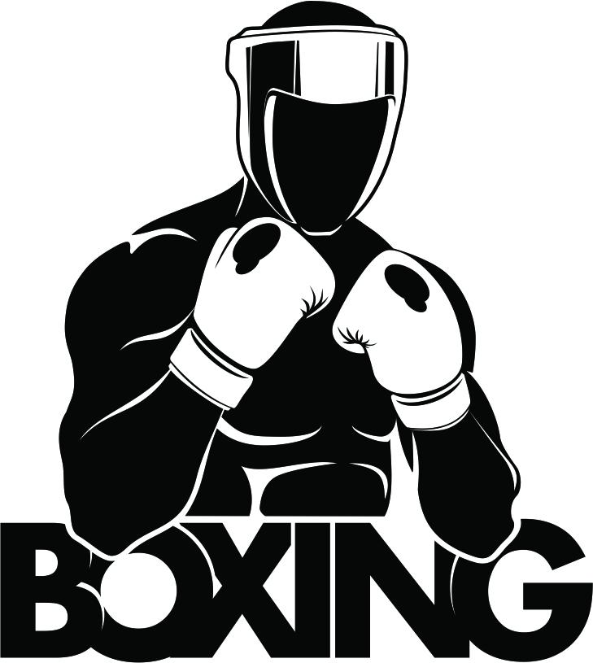
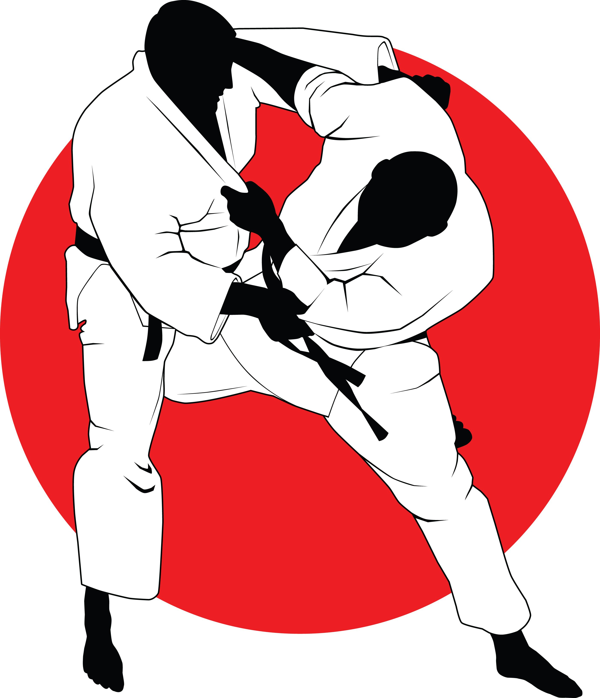
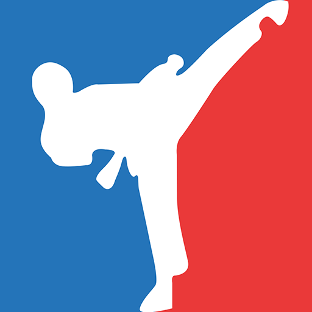

Бокс (ағылшынша box – қорап) – арнайы жұмсақ қолғаппен белгілі бір ереже бойынша жекпе-жек күш сынасатын спорт түрі. Жекпе-жекке шыққан екі ойыншы қарсыласының денесінің белгілі бір жеріне дәл соққы беруді көздейді. Жекпе-жек аумағы 4,9x4,9 м немесе 6,1x6,1 м, жан-жағы 1,3 м биіктікте арқанмен керілген рингте өтеді.
Бокс ерте Грек елi — Элладамен тығыз байланысты. Аңыздарға сенсек, ол кезеңдегi ең танымал «қолғап иесi» — Тезей болған көрiнедi. Ал Платонның жазуы бойынша, жұдырықтасу өнерiнiң атасы — теңiз құдайы Посейдон мен Мелия есiмдi нимфаның ұлы — Амыкус екен. Ерте Грекияда болған бокстың алғашқы белгiлерiн қыш құмыраларда салынған боксшылардың бейнесi де дәлелдейдi.
Ал жақында археолог ғалым бiздiң жыл санауымыздан 3 мың жыл бұрын салынған шiркеудiң қабырғаларынан бокс қолғабының суретiн де тауып отыр. Бiр қызығы, ол кезеңдерде кубок жеңiлген боксшыларға берiлген көрiнедi. Айталық, соғыс өнерi десе, сақалын кесуге бар Рим императоры Калигула сонау Африкадан қайратты құлдарды сатып әкелiп, көз алдында қоразша төбелестiредi екен. Императордың екi сүйiктi спортшысы болса керек. Бұл Глаукос пен Меланкомас аталатын алыптар дәл қазiргi бокста қолданылатын бiршама соққы түрлерiне негiз салып кеткен екен.
Дзюдо спортының пайда болу күні деп 1882 жылы болып есептеледі. 21 жастағы жапондық Токиодағы будда храмында (Эйзедзтта) “Кодокан” мектебін құрған. Ол жас жігіт Дзигоро Кано болды. Дзюдо сөзі “дзю-дзюцу” (jujitsu) сөзінен шыққан. Ол өз кезегінде сумо күресінің бір ағымы болып шыққан. Дзигоро Кано Токиодағы Император университетінде оқып жүргенде “дзю-дзюцу” негіздерін түсінуге кірісті. Құзыретті бапкерлердің арқасында жас жапондық ең қысқа уақытта күресте үлкен жетістікке қол жеткізді.«Дзю-дзюцу» — «қарусыз күрес» — деген мағынаны білдіреді. Аударма бойынша «жұмсақтық өнері» дегенді білдіреді. Бұл туралы атақты аңыз бар. Ол былай болыпты: Бір күні дәрігер Сиробэй Акияма бақшаны аралап жүргенде, кешегі омбы қардың әсерінен үлкен ағаштардың бұтақтары сынғанын байқады. Тек жас талдың бұтақтары жас болғандықтан майысып жерге тиіп тұрды. Бірақ біраз уақыттан кейін қайтадан түзеліп орнына келді. Осыны көрген Сиробэй Акияма: «Берілу арқылы жеңіске жету!» деген тұжырымдама жасады.
ДзюдоАралас жекпе-жек өнері (сондай — ақ MMA-ағылш. Mixed martial arts) - көптеген техникалардың, мектептер мен жекпе-жек бағыттарының үйлесімін білдіретін жауынгерлік өнер (жиі "Ережесіз күрес" деп аталатын). ММА соққылы техниканы қолдану және тіректе (клинч) және еденде (партер) күреспен толық түйіспелі ұрыс болып табылады. "Mixed Martial Arts" терминін 1995 жылы ММА-ның ерте ұйымдарының бірі Battlecade президенті Рик Блюм ұсынды. ММА бастаулары біздің дәуірге дейін уақыт кетеді: алғашқы Олимпиада ойындарында ежелгі гректер панкратионда жарысты, бірақ ММА 1990-шы жылдарына дейін әлемде айтарлықтай танымал бола алмады. "Ultimate Fighting Championship" (ағылш. - "Абсолютті күрес чемпионаты")," Pride Fighting Championships " (ағылш. ММА-ның танымалдығы күрт өсті, оған кәсіби бокстың көрінісінің құлдырауы себеп болды..
ММАТхэквондо (кор. 태권도, 跆拳道 – /тхэгвондо/) — шығыс күрестеріне жататын ұрыстық спорттың бір түрі. корей халқының ұлттық спорты ретінде мәлім. 2000 жылдан бастап олимпиядалық спорт түрі болып саналанады. Тхэквондо бір жағынан ежелгі спорттың түрі, екінші жағынан заманауи күрес жүйесі болып табылады. Тхэквондо ежелгі корей қағидаларына, ежелгі күрес түрлеріне сүйінеді. Бірақ қазіргі таңда таралған тхэквондоның қалпы 20-ыншы ғасыр шамасында пайда болған. Таеквондода спортшының аяғы мен қолы қатар жұмыс істейді, мақсаты жарыс ережесіне сай келетін әдістерді пайдалана отырып жеңіске жету. Таеквондошы әрқашан өз-өзіне сенімді, салқынқанды, сабырлы не нәрсе жасаса да ойланып барып орындайтын адам.
толық ақпарат Халықаралық жүзу федерациясы Халықаралық жүзу федерациясы (ФИНА) 1908 жылы құрылған. 1991 жылы оның құрамына 128 ел кірді. Олимпиялық ойындар 1896 жылдан, дүниежүз. чемпионаттар 1973 жылдан, еуропалық чемпионаттар 1926 жылдан өткізіледі. Дене шынықтырудың бір түрі ретінде жүзумен адамдар ежелгі дәуірден бастап айналыса бастаған. Біздің жыл санауымыздың басында Римде суы жылытылатын 50x20, 100x50 метрлік үй ішіндегі бассейндер салынған. 16 ғасырдың басында жүзу спорттық сипат алды. Алғашқы жарыс 1515 жылы Венецияда өткізілді. КСРО-ның 1947 жылы Халықаралық жүзу федерациясына мүше болуы, 1952 жылдан бастап Олимпия ойындарына қатысуы жүзу спортының Кеңес Одағында, оның ішінде Қазақстанда да жедел дамуына ықпал етті.Спорттық жүзу жарыстары еркін (кроль), брасс, баттерфляй, шалқалап жүзу, тағы да басқа тәсілдерімен 50 метрден 1500 метр қашықтық аралығында өткізіледі. Сондай-ақ жүзудің қолданбалы, су астында жүзу, синхронды (көркемдік) жүзу т.б. түрлері болады. жүзудің тұрмыстық, емдік, ойын түрлері де бар.
жүзу спортыКурбаналиев Жанер Нуржанович
Казахстан, Г. Алматы, Шаляпина Правда 32а.
Email: zhkurmanaliev@college-narxoz.kz
Тел: +77079074754